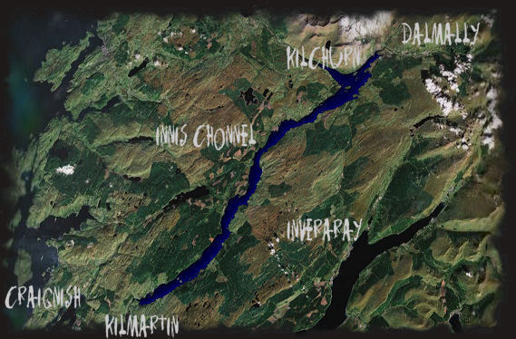

In Scottish folklore, certain elements of the landscape owe their existence to a local god, Cailleach Bheur, who often took on the appearance of a magical shepherdess.
Every night, after bringing her flock back, the shepherdess would go to the summit of Ben Cruachan to cover the spring with a flat stone, stopping it from flooding the meadow during the night. One evening, exhausted after driving her sheep through the mountains, she fell asleep on the way, awakening to the sight of the spring gushing towards the valley in an uncontrollable torrent. The shepherdess fought in vain to try and stop the flood, but the current was too strong, even for her. Defeated, she looked down at the flooded valley below: livestock and humans side by side, all drowned, and being drawn away in the terrible flow. Horrified and racked with guilt, she turned to stone. The flooded valley became Loch Awe, the Loch of terror.
